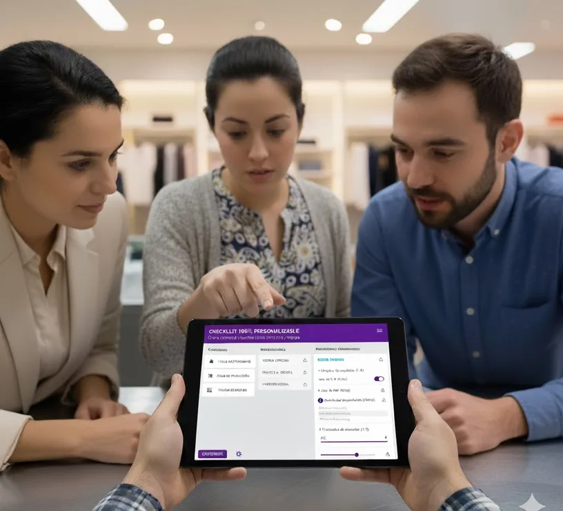

Flexibilidad total
Checklist 100% personalizable
Diseñá auditorías adaptadas a cada local, área o equipo.
Creá categorías, subcategorías y preguntas con distintos tipos de respuesta —del 1 al 5, binarias, informativas o con alertas— y asigná ponderación individual para priorizar lo importante.